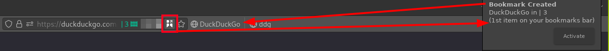
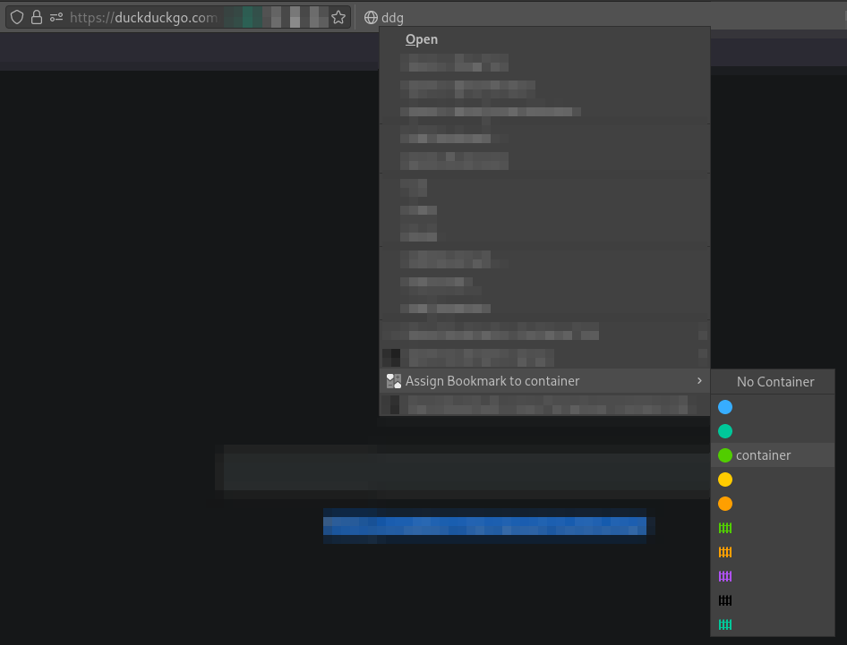

Firefox extension that allows you to securely open bookmarks in multi-account containers.
Access from the omnibar:

Access from the bookmark-bar context-menu:

Applying this operation to the contents of entire folders is also supported.
When a bookmark is assigned to a container, it’s assigned a random token.
It’s prepended to the existing URL, as well as the prefix about.
E.G. https://example.com -> about:r4nD0Mt_k3n:https://example.com
Tokens are refreshed upon these conditions
When the browser restarts
When the bookmark’s used
When a security breach is attempted
Unused or invalid tokens are deleted upon these conditions
When the browser restarts
After the token in question has been refreshed
After bookmark deletion
After a bookmark is unassigned
All code is licensed under the MIT License.
Because innovation is desirable.
Do it. If it’s needed, contribute. I’ll accept any Pull/Merge request, so long as it’s reasonable, and decently tested.